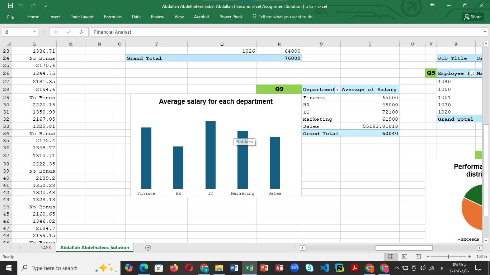
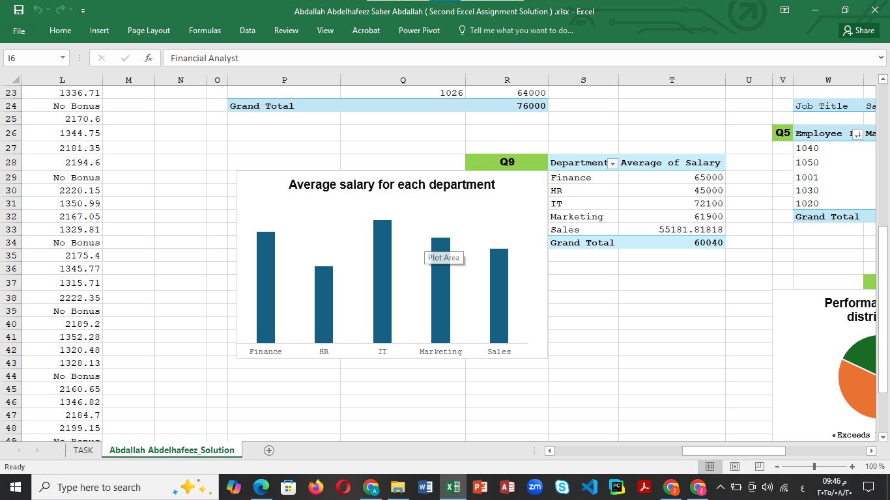

Employee Performance Analysis Dashboard
 

Story: The HR department faced challenges in identifying top performers and justifying bonus allocations. Performance reviews were inconsistent and lacked data-driven insights.
My Approach: I collected raw employee data and used Excel Power Pivot, PivotTables, and advanced cleaning techniques to design a dashboard. I tracked performance distribution, salary patterns, and the correlation between ratings and bonuses.
Impact: HR gained a 30% faster review cycle and could make evidence-based promotion and bonus decisions, leading to fairer employee recognition and cost savings.
View on GitHubModeling Orders Database


Story: A growing retail company struggled with scattered spreadsheets for sales, customers, and shipping. This made reporting inefficient and prone to errors.
My Approach: I designed a relational database model with normalized tables for orders, products, customers, and shipping. Using Power Pivot, I connected them to enable automated sales dashboards.
Impact: The new system reduced reporting time from days to under 1 hour, improved accuracy, and gave management the ability to track revenue, best-selling products, and customer demographics in real-time.
View on GitHubAnalyzing Sales Database with SQL


Story: The sales team needed insights into seasonal trends, customer behavior, and top-performing products, but data was stored in raw unoptimized SQL tables.
My Approach: I restructured the database, cleaned inconsistencies, and wrote optimized queries to uncover meaningful patterns. Queries tracked best sellers, seasonal spikes, and loyal customer segments.
Impact: The company was able to plan seasonal promotions, resulting in a 15% increase in holiday sales. Data-driven decision-making became part of their strategy.
View on GitHub